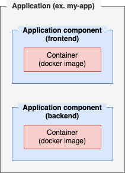

Getting started
Anatomy of a mdos application
Applications & application components
Applications are to be seen as a higher level concept that is composed of one or more application components. Application components are your actual projects, where one component would be your API backend server, another might be a database server and a third one your front end application for instance.

This architecture allows you to compose quite complex applications to suit most needs.
Project layout
A MDos application project layout is composed of one or more folders, each one representing an application component.
At the root of the application folder is a values.yaml file that holds all runtime configuration parameters for the application and it's components:
Project structuremy-application/
├── backend
│ └── Dockerfile
├── frontend
│ └── Dockerfile
└── values.yaml
In this example we have an application named my-application, that is composed of two distinct application components: backend & frontend.
Each component has it's own Dockerfile.
At the application level, there is also a values.yaml config file that holds all runtime configuration parameters for the application:
| appUUID: 8c259ee5-d70f-409b-8eea-3f410e385d0f
tenantName: my-ns
appName: my-app
appComponents:
- name: backend
appCompUUID: 552be6bf-4a8d-4003-aeb2-9999a535c299
replicaCount: 1
# Your image name and tag
image:
repository: backend
tag: latest
# Overwrite the default command for your docker image
overwriteCommand: false
command: []
commandArgs: []
# Services
service:
create: true
type: ClusterIP
portMappings:
- port: 80
containerPort: 80
# Configure ingress for your application component
virtualService:
- gateway: http-gateway
hosts:
- backend.yourdomain.com
protocol: http
httpMatch:
prefix: /
port: "80"
svcPort: "80"
# - gateway: http-gateway | https-gateway | <other>
# hosts:
# - chart-example.com
# protocol: https # http / https / tls / tcp
# tlsMatchHosts: # only for tls/https route
# - host: chart-example.com
# port: 443
# svcPort: 8443
# httpMatch: # only for http route
# prefix: /
# port: 80
# tcpMatchPorts: # only for tcp
# - 27017
# svcPort: 80
# tls: []
# Configuration parameters
config:
enabled: false
data: {}
# data:
# - type: file # will be mounted as a file inside the pod
# key: test.config
# value: "Content of test.config file"
# mountPath: "/etc/myApp/config/"
# - type: env # will be mounted as an ENV var inside the pod
# key: TEST_ENV
# value: "Value of ENV variable TEST_ENV"
# Secret configuration parameters
secrets:
enabled: false
data: {}
# data:
# - type: file
# key: test.secret
# value: "Content of test.secret file"
# mountPath: "/etc/myApp/config/"
# - type: env
# key: SECRET_ENV
# value: "Value of ENV variable SECRET_ENV"
# Persist data to a persistent volume
persistence:
enabled: false
# volumes:
# - name: data-volume
# size: 1Gi
# mountPath: /tmp
# ldlSync: false
# sourcePath: /mdos/content-volumes/app1 # path from where data should be collected (ONLY used with ldlSync=true)
# type: full # full / partial depending on the type of file copy (ONLY used with ldlSync=true)
# hostpathVolumes:
# - name: host-data-volume
# mountPath: /tmp
# hostPath: /mdos/content-volumes/app1
# type: Directory
resources: {}
# limits:
# cpu: 100m
# memory: 128Mi
# requests:
# cpu: 100m
# memory: 128Mi
- name: frontend
appCompUUID: 5515dedf-9c1e-4afb-9f20-5238bfbd5256
replicaCount: 1
# Your image name and tag
image:
repository: frontend
tag: latest
# Overwrite the default command for your docker image
overwriteCommand: false
command: []
commandArgs: []
# Services
service:
create: true
type: ClusterIP
portMappings:
- port: 80
containerPort: 80
# Configure ingress for your application component
virtualService:
- gateway: http-gateway
hosts:
- frontend.yourdomain.com
protocol: http
httpMatch:
prefix: /
port: "80"
svcPort: "80"
# - gateway: http-gateway | https-gateway | <other>
# hosts:
# - chart-example.com
# protocol: https # http / https / tls / tcp
# tlsMatchHosts: # only for tls/https route
# - host: chart-example.com
# port: 443
# svcPort: 8443
# httpMatch: # only for http route
# prefix: /
# port: 80
# tcpMatchPorts: # only for tcp
# - 27017
# svcPort: 80
# tls: []
# Configuration parameters
config:
enabled: false
data: {}
# data:
# - type: file # will be mounted as a file inside the pod
# key: test.config
# value: "Content of test.config file"
# mountPath: "/etc/myApp/config/"
# - type: env # will be mounted as an ENV var inside the pod
# key: TEST_ENV
# value: "Value of ENV variable TEST_ENV"
# Secret configuration parameters
secrets:
enabled: false
data: {}
# data:
# - type: file
# key: test.secret
# value: "Content of test.secret file"
# mountPath: "/etc/myApp/config/"
# - type: env
# key: SECRET_ENV
# value: "Value of ENV variable SECRET_ENV"
# Persist data to a persistent volume
persistence:
enabled: false
# volumes:
# - name: data-volume
# size: 1Gi
# mountPath: /tmp
# ldlSync: false
# sourcePath: /mdos/content-volumes/app1 # path from where data should be collected (ONLY used with ldlSync=true)
# type: full # full / partial depending on the type of file copy (ONLY used with ldlSync=true)
# hostpathVolumes:
# - name: host-data-volume
# mountPath: /tmp
# hostPath: /mdos/content-volumes/app1
# type: Directory
resources: {}
# limits:
# cpu: 100m
# memory: 128Mi
# requests:
# cpu: 100m
# memory: 128Mi
|
This is where you configure things like volumed, environement variables, secrets such as API tokens or credentials... The generated values.yaml file contains examples of these properties.
The mdos CLI will allow you to scafold / create application projects and application components, as well as build and deploy them to your Kubernetes cluster.
Create a new application
Let's create a new application project using the mdos CLI command:
mdos generate application
This will create a new folder with the values.yaml configuration file in it. We are now ready to create application components.
Create a new application component
Inside your application project folder, run the following command:
The CLI will ask you a couple of things about some base configuration parameters.
This will create a new component folder with an empty Dockerfile for you to use, as well as update the values.yaml file referencing the component as part of the overall application project along with it's configuration parameters.
You can no go ahead and build & test your application locally, and complete the Dockerfile that will be used to build your component application image for deployment onto the cluster.
Build your application
Deploy your application